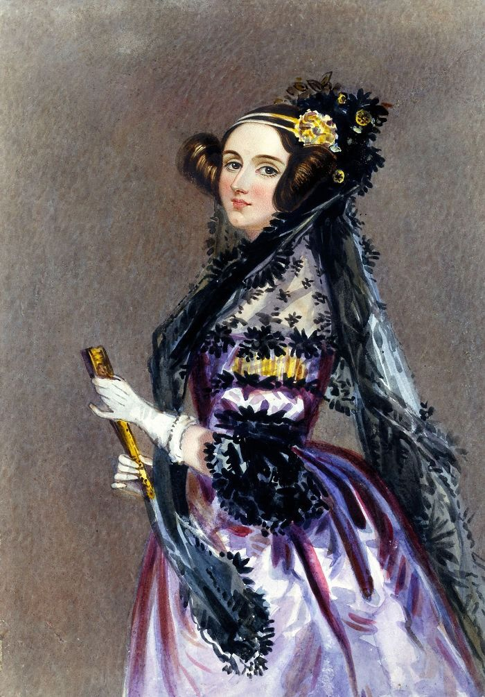

The First Computer Programmer
A brilliant mathematician whose ideas helped shape the start of modern computing.
About Ada Lovelace
Born two centuries ago on December 10, in 1815, Ada Lovelace was a pioneer of computing science. She took part in writing the first published program and was a computing visionary, recognizing for the first time that computers could do much more than just calculations. She was an English mathematician who has been called the first computer programmer for writing an algorithm. As the daughter of famed English Romantic poet Lord Byron, her life has been characterized as a constant inner-struggle between logic, emotion, poetry and as a mathematics during periods of failing health, obsessive gambling and bursts of boundless energy.
Early Life And Education
Ada Lovelace, born Augusta Ada Byron on December 10, 1815, in London, England, was the daughter of renowned poet Lord Byron and Anne Isabella Milbanke. Her father left the family when Ada was a baby, and he died when she was eight, leaving her without any personal connection to him. Raised by her maternal grandmother and servants after her grandmother’s death, Ada faced strict and challenging upbringing by her mother, who emphasized education. Lady Byron, a highly intelligent woman passionate about mathematics and science, sought to steer Ada away from her father’s literary interests. She arranged private tutors for Ada in subjects like mathematics, science, music, and French—typical for girls of wealthy families at the time, as universities were inaccessible to women. Ada’s education was rigorous, with her mother enforcing discipline to make her a serious and disciplined individual. Despite these challenges, this foundation shaped Ada into a pioneering figure in mathematics and computing.
Achievements
Foundational Achievement
1843: First Computer Program - Ada Lovelace developed an algorithm for Charles Babbage's Analytical Engine to compute Bernoulli numbers. This groundbreaking work marked the creation of the first-ever computer program. It showcased her ability to turn abstract mathematical theories into practical computation.
Expanding Vision
1843: Concept of Universal Computation - Lovelace proposed that machines like the Analytical Engine could process symbols, not just numbers. She envisioned that they could potentially generate music or art if provided with the right algorithms. This idea highlighted her understanding of computational versatility, foreshadowing modern computing applications.
Collaboration and Influence
1843: Annotated Luigi Menabrea's Paper Lovelace expanded on Menabrea’s work by adding her own insightful annotations, providing detailed explanations of the Analytical Engine's potential. Her collaboration with Charles Babbage during this time earned her the nickname "Enchantress of Numbers," emphasizing her influence in the field.
Philosophical Insights
1843: Foundation of AI Thought - Lovelace critically assessed the capabilities of machines, arguing that while they could follow instructions to process data, they could not originate ideas or create something truly novel. Her thoughts on this limitation inspired the modern "Lovelace Test," a measure of a machine's creativity.
Facts
One of Ada Lovelace's hobbies was gambling on horse racing! She used her understanding of mathematics to predict the winners and placed large bets.
- A major challenge Ada Lovelace faced was that society did not believe a woman could succeed in math or science, so the contributions she made while working with Charles Babbage on his 'difference engine' and 'analytical engine' were all credited to him.
- After her death, she was buried at her request in the Byron family vault inside the Church of St. Mary Magdalene in the small English town of Hucknall. Her coffin was placed side-by-side with that of her father, who also passed away at the age of 36
- Ada Lovelace's unique interest in combining the arts and sciences enabled her to use creativity alongside analytical thinking, leading to her pioneering work in computing.